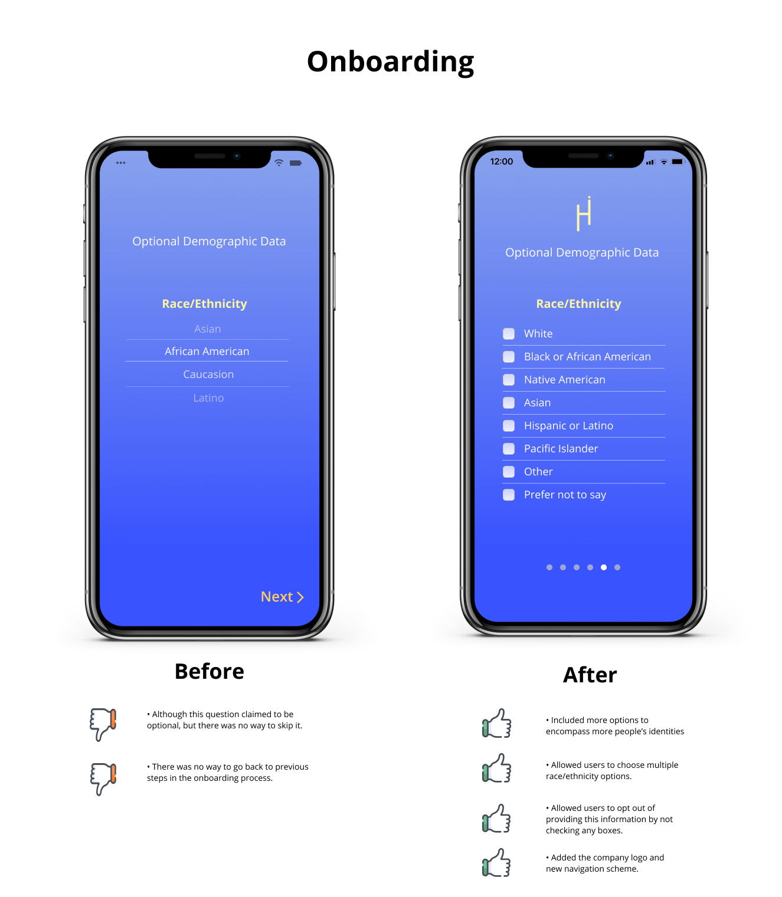

Honesti Mobile App Redesign
UX Design | UX Research
Honesti is the wellness support mobile platform for college students. It is a start-up company created by a group of students at the Ross School of Business, University of Michigan. My role was product manager to lead a design team of 4 to evaluate and redesign Honesti (formerly Kare) App to help make improvements to their app's user experience before its release. I helped conduct UX research to evaluate original flows and features (particularly the onboarding process, communities page, reaction icons). Later, I made design iterations based on research findings.
Project Type
Client Project
Role
Product Manager
Duration
Sep. 2020 - Dec. 2020 (3 months)
Methods
User research, Qualitative Analysis,
Wireframing, Rapid prototyping, User
testing
Tools
Figma
Teammates
1 UX Researcher,
2 UX Designers
PROBLEM
How can we design an app to address students' mental health needs that are not being met by current on-campus offerings?
Many college students struggle with their mental health challenges, and current
universities' mental health programs are struggling to meet the demand for wellness resources.
The counseling services at the University of Michigan are only equipped to help students
with school-related stress and they often do not meet with enough frequency or flexibility
for all students.
Honesti, provides students a platform that
allows students within the same university
to join anonymous peer support communities to talk through their issues with
other students who share similar experiences.
This mobile app is designed to address the wellness demands of students that are not
being met by current university offerings. The unique features include:
SOLUTION
Honesti Mobile App

We interviewed college students to understand their mental health stressors and whether their needs were met by the university resources. We conducted usability testing with the original wireframe to collect feedback and recommendations. With the findings from user research, our team redesigned the features and recommended long-term new features to be implemented for the launch in 2021.
We presented our work to the CTO of the company and user group (college students). We gained positive feedback.Process
Design Process at a Glance

Research
Interviews
We conducted interviews with 3 undergraduate students at University of Michigan. We wanted to learn more about their mental health needs and experiences with current wellness support offerings at the university. We also wanted to conduct usability tests on the original Honesti app’s design to see what functionality needed to be improved. All Interviews were conducted via Zoom, I was in charge of drafting interview protocol, recruiting and interviewing participants.
Interview Analysis
After we finished interviews and usability tests, we created affinity maps to analyze and found specific themes that commonly appeared among those three interviewees. Through this exercise, we knew that the app needed to be redesigned to ensure meeting users' needs and experience. For instance, the affinity diagram helped reveal to us that the onboarding process was too exclusive, therefore we need to expand upon it. The emerging themes are below:

We then presented our interview findings to the Honesti CPO. I discussed with CPO to see what her priorities were so that we would focus on specific goals for the remainder of the intense project timeline. 1. Find an effective alternative to the “!!” reaction button on forum posts that solves the challenges of building trust across an anonymous platform, fostering positivity, and making it easy for users to engage. 2. Improve the readability of the app by making images, icons, and text larger where needed and increase contrast of some texts. Simplify some wording. 3. Through research and interviews, identify additional discussion communities that would improve inclusiveness of users' demographics to meet users’ needs. 4. Design a proposed new check-in function; potentially tied in with the Resources page. 5. Redesign the Resources page to make it more useful and easier to understand. 6. Overall, suggest improvements for user experience across the app.
User Flow Diagram
I led the team to draw a user flow diagram to show how users would navigate between pages and the functions.
Through this exercise, we found that the homepage was confusing due to sheer number of screens our client provided to us.
Users would start with the onboarding process, then landed on the community page which was also the homepage.
From there, users could read trending posts and communities they joined.
Based on our analysis of user interviews and discussions upon the team and CTO, these are the key considerations
for the app:
REFINE
Interface Redesigns
Below are some of the screens that I redesigned to help improve the app’s user experience. You will see the comparisons between the old and new versions. We had a few constraints to work within as we worked on these redesigns. First, the client only provided us sheer number of screens to us which produced the gap between workflows. Second, the client was planning to release the app shortly while we were redesigning, so we tried to focus on the most important changes and they could change and implement quickly. Third, there was only one programmer so we tried to keep our suggestions simple enough to implement. Fourth, we had a limited timeframe ourselves so we had to prioritize what features we wanted to change.
The original design of the app did not meet standard UX design metrics and material design guidelines, such as its font size, margins, and inconsistent color scheme. Therefore, we created a design system to make all fonts, color scheme, icons consistent across the app in order to make the application more legible.
Communities (discussion forums) are the central part of the Honesti app experience. From our user interviews and usability tests, we found that users would like to join as many communities as needed, but they favored ethnic minorities and mental health support groups. Adding more communities would make the app more inclusive of the diverse needs of students. Additionally, users wanted a way to be able to skip "join the communities" during the onboarding process to allow them time to explore the app and decide whether to add communities later on. The inclusion of a skip button during the onboarding process would give users the option to join communities freely. The addition of an all-inclusive group for every student was also included to ensure that everyone was a part of at least 1 group.


FINAL DESIGN
Key Screens

Onboarding Feature
The onboarding process reinforces Honesti's value of supporting college students' wellness and provides instructions that highlight key features of joining communities and discussion topics anonymously.

Communities Feature
Allows users to leave and rejoin communities.
Allows users to discover new communities and trending posts to be part of and join them later.
Reflection
What I've learned & Next Steps
Be empathetic
Through this project, I was able to develop empathy for students who had to deal with multiple factors affecting their emotions. Our targeted users, students can join anonymous and various communities to discuss their mental health and well-being concerns. It reduces stigma and removes barriers to allow students to join from anywhere and at any time. In our interviews, we recognized that it was important for students to talk to people who shared a similar experience.
The design phase of this project was about two weeks, if I had more time:
1) Test our final prototypes with our target users: college students. Redesigned features especially reaction buttons will require more user testing. 2) Our long-term recommendations for the app are to give users the freedom to personalize the user's name and profile picture. 3) Adopt another mood tracking feature to help users identify and track their emotions to provide recommended resources. It can help track students' stress levels and inform universities how students are doing. This proposed feature received positive feedback from peers, students, and the CTO.